Current Projects
Project 1: BACnet/IP on ESP32
A lightweight BACnet/IP protocol stack implementation using ESP32, supporting Wi-Fi networking, UDP socket handling, Who-Is/I-Am discovery, and basic Read Property service parsing.
- Tools: ESP-IDF, FreeRTOS, Wireshark, UDP
- Features: Debug logging, APDU parsing, unicast/broadcast support
Project 2: CutCam – Wireless Hair Clipper Camera
CutCam solves the challenge of grooming the back of your head by attaching a Wi-Fi-enabled camera to standard hair clippers, streaming live video to smart devices. Designed for DIY grooming convenience.
- Tools: Fusion 360, ESP32, 3D printing
- Features: Universal fit, live video streaming, easy installation
 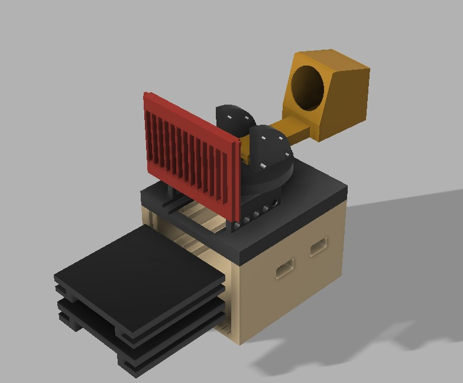
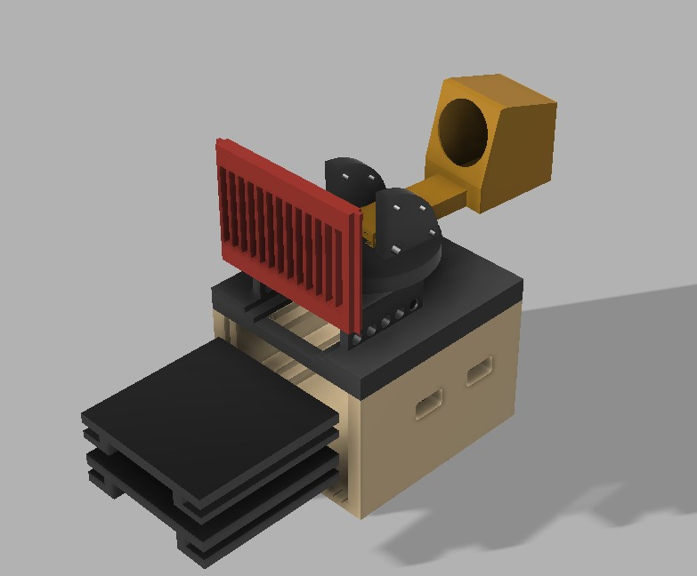
Project 3: BMW Logo CNC Carving
A CNC-machined BMW logo created from wood and filled with epoxy, designed in Fusion 360 and toolpathed for 3-axis milling. This project was for personal crafting use.
- Tools: Fusion 360 CAM, CNC router
- Features: 2D contour, adaptive, and pocket toolpaths
Project 4: HVAC Upgrade – Medhanealem Orthodox Church
Consulting work and load calculations for the HVAC replacement project at Mekane Selam Medhanealem Cathedral in Oakland, CA. Used Trace 3D Plus for full cooling and heating load analysis and system design verification.
- Tools: Trace 3D Plus, AutoCAD, HVAC design principles
- Highlights: RTU sizing, exhaust recommendations, duct layout consultation
 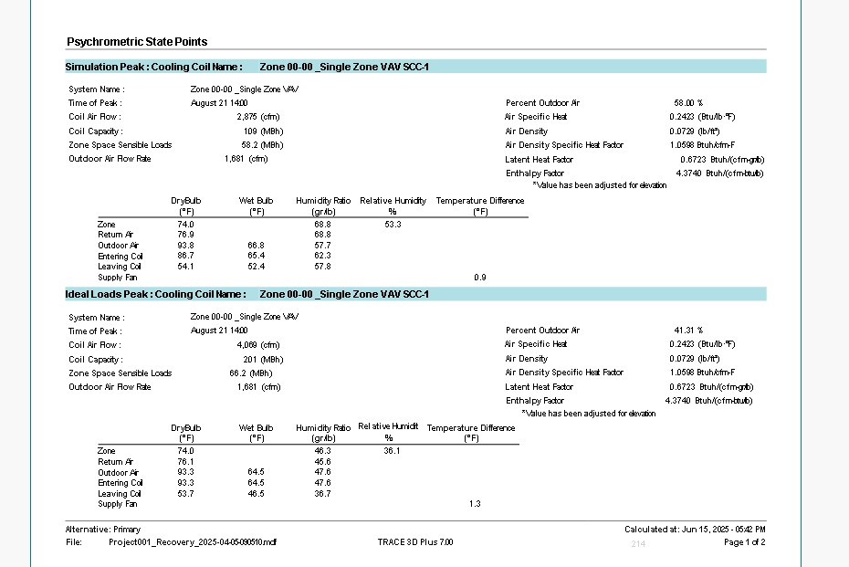
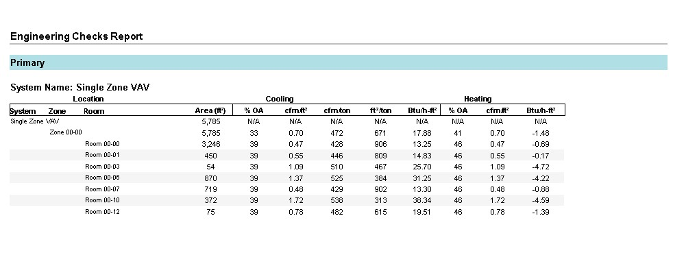
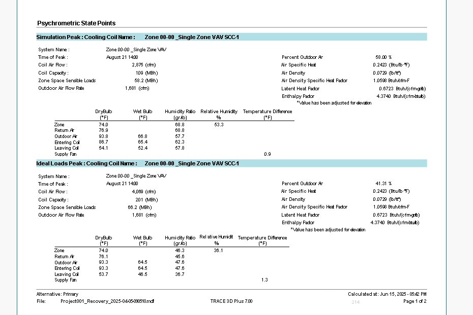
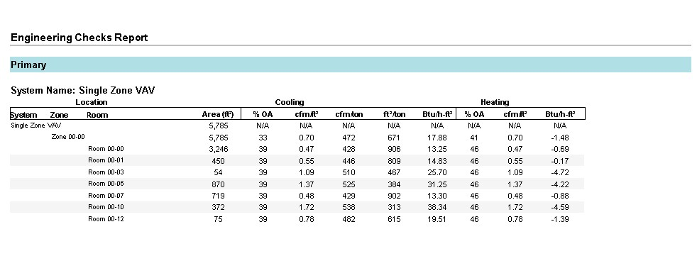

 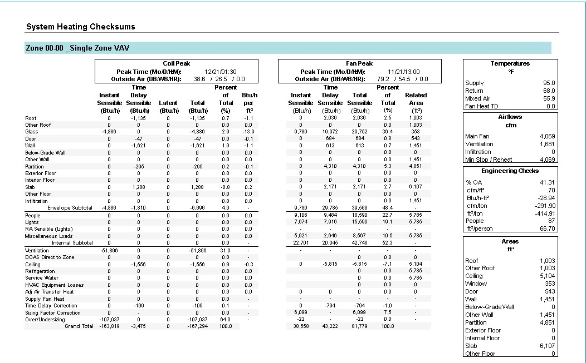
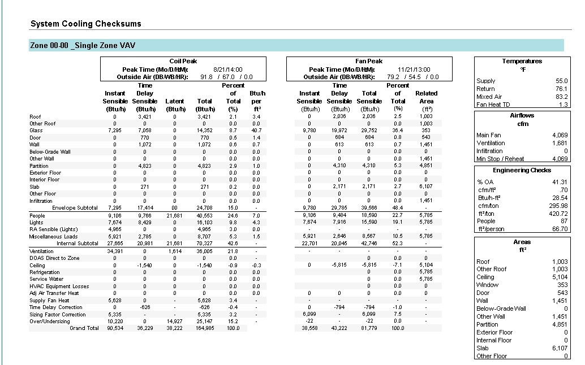
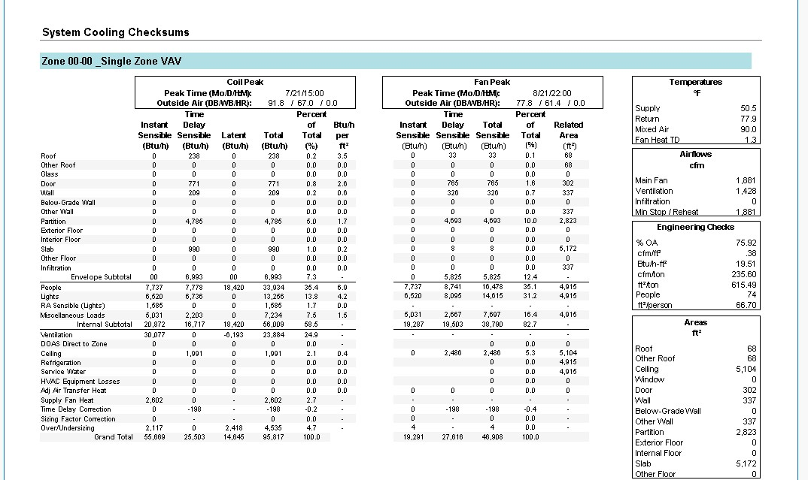
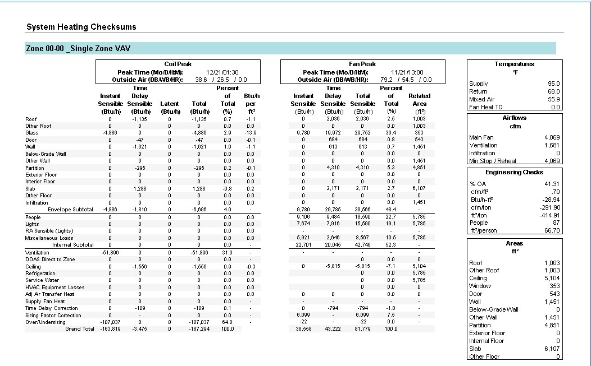
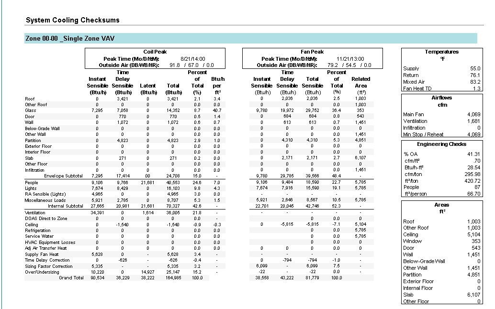
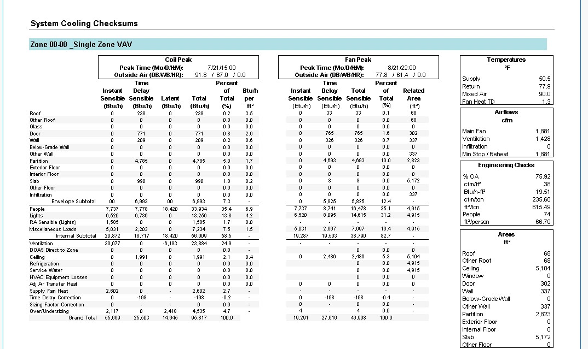
School Projects
- Programmable CCCV EV Battery Cycler: Built a functional battery charger prototype with custom current control circuit and simulation tools. Report (PDF)
- HVAC Load Analysis – SJSU: Performed thermal calculations and sizing for HVAC systems using building parameters. Report (PDF)
- Smart Irrigation System: Final semester controls project that automates irrigation based on soil conditions. Report (PDF)
- ME106 Mechatronics – Squirrel Repellent System: Arduino-driven detection and scare system using PIR and light sensors. Report (PDF)